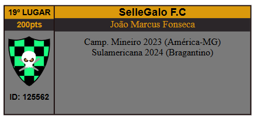
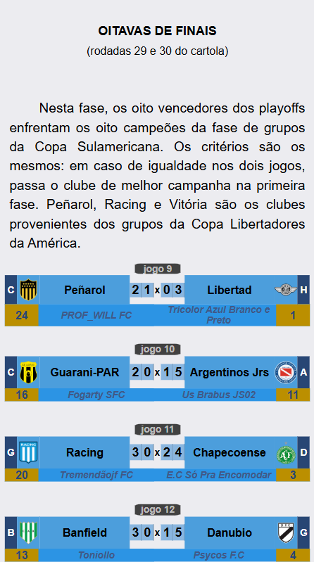

Campeonato de Cartola
A vitória no cartola é o sucesso do seu time!

Redação Cartola - 28/11/2024 - 17h20min
Por 90,95 vs 88,94 Sellegalo superou o "Tricolor Azul Branco Preto", treinador do Libertad, dono da melhor campanha da primeira fase e conquista a primeira Copa Sulamericana da sua história.
Somando a primeira fase, foram 13 jogos com 8 vitórias e cinco empates, sagrando-se no primeiro campeão de uma copa na modalidade interligas de forma invicta.
Com o título, o Sellegalo F.C, do cartoleiro João Marcos Fonseca, saltou do 45º posto para a 19ª posição do ranking geral dos melhores treinadores de todos os tempos, chegando à marca dos 200 pontos (50pts pelo título mineiro de 2023 com América-MG e mais 150pts desta sulamericana) 
Treinador campeão faturou 200 reais e 150pts no ranking geral de treinadores, enquanto o técnico do Libertad, Tricolor Azul Brango e Preto, obteve 120 reais. Além disso, Bragantino garantiu vaga direto na fase de grupos da Copa Sulamericana de 2025.
Parabéns SelleGalo F.C. Abaixo, o quadro completo de todas as fases desta sétima edição. 